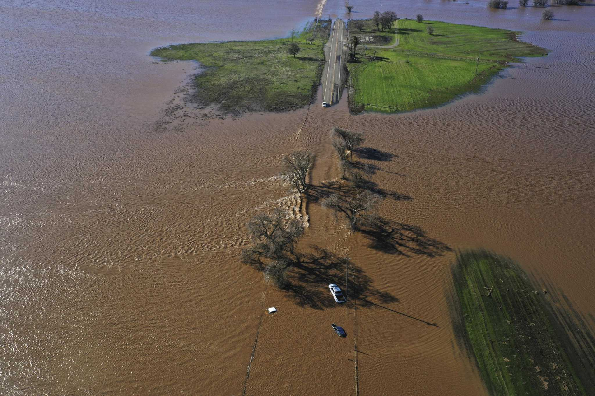

For my Data Science for Energy and Controls class, I worked on optimal control of an HVAC model during demand response events.
For my capstone project, I worked on creating a website that climate investors could use to find researchers and investors
working on climate related technology as listed in IEAs ETP Clean Energy Technology Guide.
For my Scalable Spatial Analytics class, I evaluated the bike networks of lower income neighborhoods with the intention of
seeing how much more infrastructure needs to be developed in these neighborhoods when AB 117 gets implemented.

For my Senior Project in UC Davis, we evaluated three different implementations of Flood MAR (Managed Aquifer Recharge) and determined
which was the most effective for current usage based off historical data
During my internship with CW3E, I had the pleasure of working on Professor Benjamin Hatchett's research regarding atmospheric river events
and their relation with avalanche fatalities, along with analyzing weather patterns during these fatalities.
{kind=link}